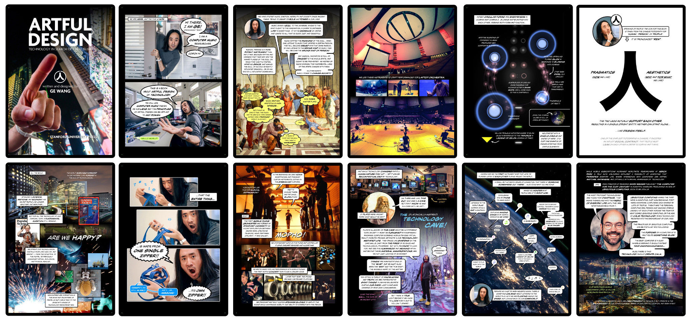
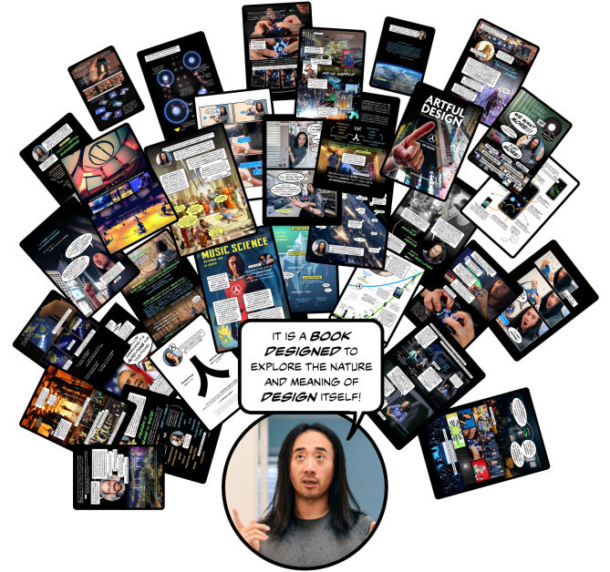
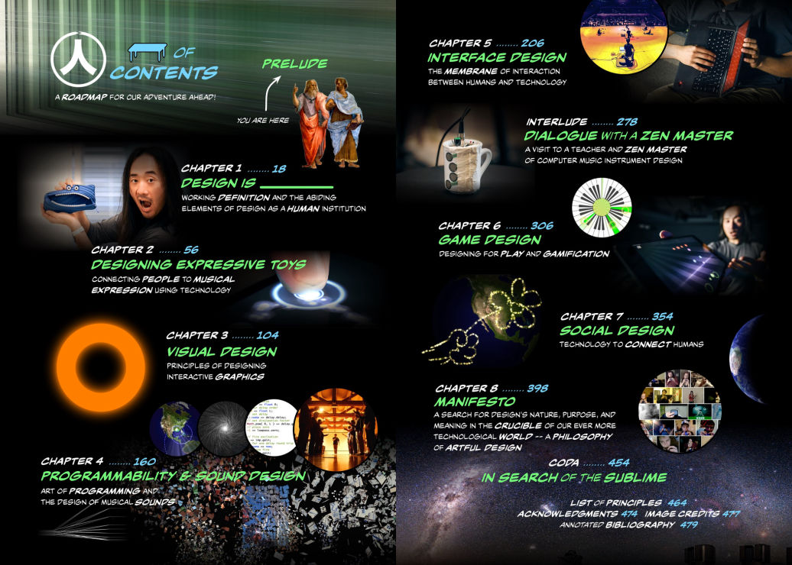
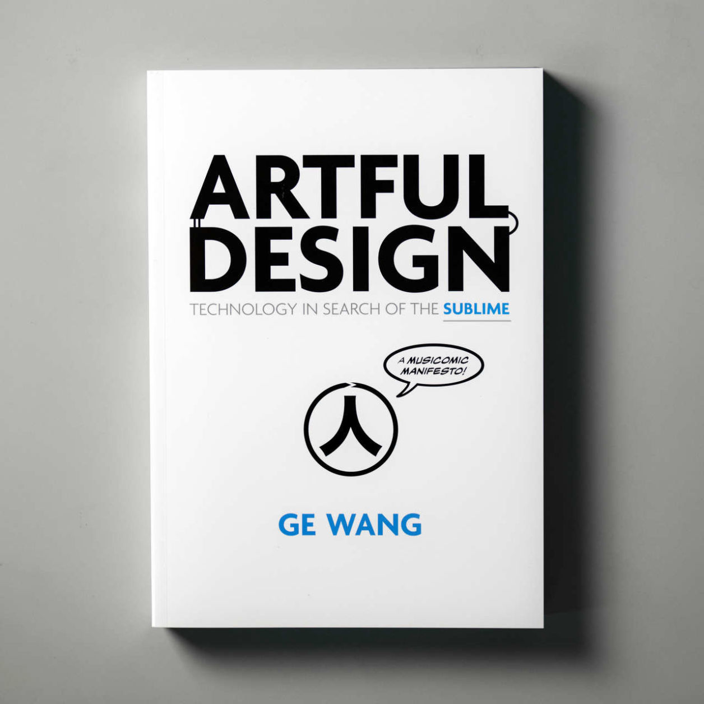

Artful design is a design philosophy that prioritizes aesthetic and ethical alignment between the tools we make and a search for the kind of world we would want to live in. Artful design views design as a universal human activity (“We are, therefore we design.”) and argues for a kind of design for flourishing that is centered on craft, values-based design, aesthetic conscientiousness.
As a practical design philosophy, artful design promotes the creation of tools that offer both utility (i.e., a means-to-an-end) and strives for a sublime understanding of people not as users but human beings (as ends-in-themselves).

The main tenets of artful design are articulated in my photo-comic book Artful Design: Technology in Search of the Sublime (A MusiComic Manifesto), created as a meditation on tool-building and also as a kind of "field guide for the engineer with a soul"." Through case studies of tools, toys, instruments, and social experiences—as well as over 100 design principles (i.e., “aphorisms intended to be consulted during the design process in moments of ambiguity”, to quote my former Ph.D. student Jack Atherton)—artful design articulates an aesthetic manifesto of technology and a philosophy of design. It has been some eight years since Artful Design was published, and while I would probably write it somewhat differently today in 2026; the core ideas remain. The Artful Design Manifesto reads as follows:
ARTFUL DESIGN MANIFESTO
In our age of rapidly evolving technology and unyielding human restlessness and discord, design ought to be more than simply functional; it should be expressive, socially meaningful, and humanistic. Design should transcend the purely technological, encompass the human, and strive for the sublime.
Sublime design presents itself, first and last, as a useful thing, but nestled within that window of interaction lies the novel articulation of a thought, an idea, a reflection - an invisible truth that speaks to us, intimate yet universal, purposeful without necessity of purpose, that leaves us playful, understood, elevated. It is a transformation so subtle that it escapes our conscious grasp but that once experienced - like music - we would never want to be without again.
Design should be artful.
The way we shape technology touches people, affects their lives, happiness, and their relationship with others. The things we design will come back—like a boomerang—to shape us, as individuals and communities, influencing how people think, behave, work, play, and live. However, if we can critically take the above into account, perhaps we can design better. What we make, makes us. (Artful Design Principle 8.1).
Artful design prioritizes designing for underlying values (including those of play, learning, self expression, community) in conjunction with immediate needs (Artful Design Principle 1.15)—and thinking about designing for the larger system, rather than an isolated object. Artful design argues that a foundational motivation and goal of tool-building is promote flourishing—the long-term thriving of individuals and communities—as an end in itself (Principle 8.19). To design for flourishing is to explore the questions, "what does it mean to flourish?" and "for whom?"
My grandmother often said to me, "the common people suffers the most." I have come to see that artful design's design for flourishing is never really about trying to directly "solve" entrenched human problems with technology, but to build tools (play, education, and expression) that help individuals and communities reclaim even an iota of power in a fragile world. Flourishing in this sense is not defined by an absence of suffering, but rather the acknowledgement of it—and a pursuit to create tools to live more free and more fully ourselves.
In an age of technology and human restlessness, what does it mean to design ethically? Artful design is a frame-shift of engineering ethics away from asking “how to build technology that does no harm” and instead to asking “how do we want to live with our technology?” It reframes the design/engineering question from “what is the need?” to “what kind of a world do we want to live in? What kind of a people would we want to be?” To this end, artful design argues for an education that deeply synthesizes engineering, art, the humanities, and social sciences—symbolized by the Pi-Shaped Person. (Artful Design Definition 8.14)
"Design should understand us." (Artful Design Principle 1.17) Artful design promotes tool-building that attends to humanistic understanding, emotional clarity, and beauty in everyday life: from utilities to experiences to policies that govern community, organizations, and even societies. Artful design is engineering things to be needlessly beautiful; to build technology out of some measure of love and compassion (would that not be sublime?). Indeed, this is exceedingly hard (and getting even harder in today's world). But we have to try...because that is the work—and maybe the most earnest reason to design anything. (Excerpt: "The Bittersweet Everyday Sublime" from the final chapter)
As a succinct case study of artful design, consider the Smule Ocarina (2008) and its sequel Ocarina 2 (2012). Designed for the iPhone (in my role as Smule's Co-founder, CTO and Chief Creative Officer), Ocarina exists as—and was motivated by the need to design—a commercial application, but nestled within that pragmatic "means-to-an-end" (to use the Artful Design term) was a deep desire to build something playful and musically expressive—for its own sake (as an "end-in-itself").
"Hold you phone as you might a sandwich, and blow into it."
The original Ocarina was the best-selling iPhone app in the world in November 2008 and has since been downloaded more than 10 million times and inducted into Apple App Hall of Fame. In 2026, I still show Ocarina in presentations because somehow this nearly-two-decades old app still brings a smile. I confess to my audience that beyond the commercial motivations, Ocarina was something "nobody asked for" and that "solved no problems that exist." The audience chuckle because (I think) they sense the truth in these admissions, as well as an implication: what if design and technology do not have to categorically arise out of practical need (as it is often taught in engineering disciplines), but can also be an earnest reckoning with what we hold to be intrinsically important in our lives (for example, a personal belief that "music-making does a person good")? This form of values-based design calls into question the prevailing narrative that engineering and design must always "solve a problem" or make something "more efficient" or "more convenient" (these might be good for business, but they say little about how we might want to live our lives). My students are sometimes surprised to learn that they don't need a "problem statement" or "business case" to start designing—they need only an aesthetic impulse and a little imagination about how we might want to live with our technologies, and through our tools, how we might want to live with one another. This is the core ethos of artful design.
(video) Playing Ocarina 2 in "game play" mode: all sounds are synthesized live in response to player input. Designed as both toy (a tool for open-ended play) and a musical instrument (something you can learn to play through practice; a craft)
(video) Listening to the world in the Ocarina globe: an exercise in minimal anonymous social design: no profiles, no feed; the experience was designed to feel both connected and lonely.
Read More About Ocarina
"Ocarina." 2018. (Excerpt from) Artful Design, Chapter 2 "Designing Expressive Toys." pp. 74-95.
Ge Wang, 2014. “Ocarina: Designing the iPhone’s Magic Flute.” Computer Music Journal. 38(2):8-21.
David Pogue, 2009. “So Many iPhone Apps, So Little Time.” The New York Times. February 2009.
"It’s one of the most magical programs I’ve ever seen for the iPhone, and probably for any computer. It’s Ocarina, named after the ancient clay wind instrument."


Ge Wang, 2018. Artful Design: Technology in Search of the Sublime (A MusiComic Manifesto). Stanford University Press. ISBN: 1503600521 (2016 Guggenheim Fellowship recipient)
Artful Design website
Excerpts (PDF) from Artful Design
"Prelude." Opening chapter.
"Ocarina." Excerpt from Chapter 2 "Designing Expressive Toys" pp. 74-95.
“AudioVisual Design: Beginnings & Principles.” Excerpt from Chapter 3 "Visual Design" pp. 104-123.
"Converge." Excerpt from Chapter 3 "Visual Design" pp. 144-156.
"Design of the THX Deep Note." Excerpt from Chapter 4 "Programability and Sound Design" pp. 176-181.
"Musical Filters." Excerpt from Chapter 4 "Programability and Sound Design" pp. 182-195.
"Pi-Shaped Person." Excerpt from Chapter 8 "A Philosophy of Artful Design" pp. 426-430.
"The Bittersweet Everyday Sublime." Excerpt from Chapter 8 "A Philosophy of Artful Design" pp. 440-453.

Artful Design Evolution
Artful design was not meant to be a static set of ideas, but a living framework to be reflected upon, scrutinized, and expanded. As the ideas continue to evolve, artful design has served as an overarching ethos for my research group, as we go about programming language design, audiovisual design, instrument design, VR design, and more (e.g., musical game design and humanistic AI). Artful design pervades my advising and teaching. We will explore these areas in the rest of this portfolio.